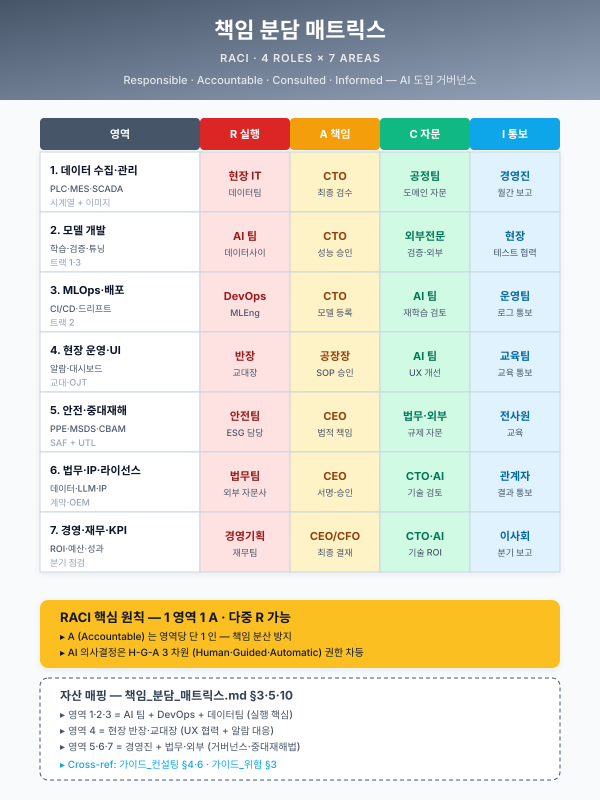

책임 분담 매트릭스 — HITL · MLO-03 · 거버넌스 통합¤
📖 약 16 분 읽기

ℹ️ 페이지 정보 (워크스페이스 메타)
자체평가 갭 5 해소. HITL UI (Track 1 § 5.3) 와 MLO-03 (Track 2 § 6.4) 의 책임 분담을 통합 RACI 매트릭스 + AI 의사결정 책임 표 + 권한 단계별 차등 노출 표 3 종으로 표준화하여, 사업계획서 본문·별첨 인용 시 매번 반복 작성을 제거한다. 또한 모듈_OEM_공급망_정합 BLK-OEM-D, 모듈_중대재해_안전 BLK-SAF-D, 모듈_SaaS_클라우드_보안 BLK-CSEC-D 가 공통 참조하는 통합 표준 자산으로 기능한다.
플레이스홀더 범례 — [고객사] 고객사명, [수치] 수치, [기간] 기간, [OEM] 완성차 또는 모기업명, [%] 비율.
본 자산의 셀 값(R/A/C/I, Final Decision Maker 등)은 일반 제조 AI 사업의 표준 기본값이며, 사업계획서 작성 시점에는 [고객사] 조직도·R&R·산업별 관행에 따른 재검증이 권장된다.
1. 본 자산의 위상과 매트릭스 분류 3 종¤
1.1 본 자산의 위상¤
본 자산은 사업계획서 작성 시 다음 세 지점에서 직접 호출된다. 첫째, § 5.3 HITL 검증 체계 본문에서 § 2 의 HITL vs MLO-03 분담 표를 인용하여 현장 UX 와 MLOps 인프라의 책임 경계를 명료화한다. 둘째, § 5.4 시스템 연동 방안 또는 § 6.3 KPI 본문에서 § 1.2 AI 의사결정 책임 매트릭스와 § 1.3 권한 차등 표를 인용하여 AI 출력에 대한 결정 책임 귀속과 정보 노출 범위를 사전 명시한다. 셋째, § 7.1 Track 2 별첨 또는 거버넌스 부록에서 § 3 통합 RACI 매트릭스 전체를 인용하여 운영 단계의 역할 분담을 한 페이지로 압축 제시한다.
본 자산은 별첨 1 개 페이지로도, 본문 1~2 문단 인용으로도 활용 가능하도록 매트릭스 3 종을 모듈 단위로 분리하여 설계되었다. 모듈_OEM_공급망_정합·모듈_중대재해_안전·모듈_SaaS_클라우드_보안 의 BLK-D 책임 매트릭스 항목이 본 자산을 직접 참조하도록 § 4 모듈 결합 가이드에서 매핑한다.
1.2 매트릭스 분류 3 종¤
본 자산은 책임 분담을 목적·축·셀의 차원이 서로 다른 3 종 매트릭스 로 분리한다. 단일 표로 통합하면 축의 의미가 혼합되어 가독성과 정합성이 모두 저하되므로, 3 종을 병행 운영한다.
| 매트릭스 | 목적 | 행 (활동·결정·사용자) | 열 (역할·책임·정보 등급) | 셀 |
|---|---|---|---|---|
| § 1.2-A RACI 매트릭스 | 활동별 역할 분담 | 활동 (HITL 평가·라벨 환류·재학습 트리거 등) | 역할 (작업자·QA·MLOps·AI 책임자·CISO·OEM 감사관·경영책임자) | R / A / C / I |
| § 1.2-B AI 의사결정 책임 매트릭스 | AI 출력의 결정 권한·책임 귀속 | AI 의사결정 (검사 판정·예지보전 권고·공정 조건 추천 등) | 작업자·QA·생산팀장·OEM 감사관·산업안전 책임자·AI 시스템 운영자 | Final Decision / Veto / Audit / Information Only |
| § 1.2-C 권한 단계별 차등 노출 | 정보 등급별 사용자별 노출 통제 | 사용자 등급 (작업자·검사원·QA·설계자·경영진·OEM 감사관) | 정보 등급 (공개·내부·민감·기밀·영업비밀) | 노출 / 마스킹 / 차단 |
세 매트릭스는 상호 보완 관계이며, 한 매트릭스의 셀 변경이 다른 매트릭스의 셀을 자동 갱신하지 않는다. § 1.2-A 의 R 이 § 1.2-B 의 Final Decision Maker 와 동일하지 않을 수 있으며 (예: 라벨 정정 활동의 R 은 QA 이지만 검사 판정의 Final Decision Maker 는 작업자), 양자의 차이를 의식적으로 운영해야 책임 귀속의 모호성이 제거된다.
2. HITL UI vs MLO-03 책임 분담¤
Track 1 § 5.3 HITL UI 와 Track 2 § 6.4 MLO-03 (피드백 UI · 라벨 재주입) 은 사실상 동일한 피드백 루프를 다른 추상 수준에서 다룬다. 사업계획서 본문에서 양자의 차이를 명시하지 않으면 심사자가 "두 섹션이 중복된다" 는 인상을 받기 쉽다. 본 표는 양자의 분담을 8 개 차원에서 명시한다.
| 항목 | HITL UI (Track 1 § 5.3) | MLO-03 (Track 2 § 6.4) |
|---|---|---|
| 추상 수준 | 현장 UX (작업자 시점) | MLOps 인프라 (모델 운영자 시점) |
| 1 차 책임 (R) | 현장 작업자 · QA 검사원 | MLOps 엔지니어 |
| 2 차 책임 (A) | 생산팀장 | AI 책임자 (혹은 데이터 사이언스 리더) |
| 입력 | AI 추론 결과 (예측 · 권고 · 알람) | HITL 출력 (3 단 평가 · 정정 라벨 · 사유 메타) |
| 출력 | 평가 라벨 · 정정값 · 사유 · 사진/메모 | 학습 데이터 환류 · 재학습 트리거 · 모델 카드 갱신 |
| 표준 인터페이스 | 태블릿 UI · HMI · 모바일 앱 (현장 단말) | 라벨 DB · 재학습 파이프라인 · 드리프트 대시보드 |
| 사고 시 책임 귀속 | 작업자 (지시 미수용) 또는 도구 (UI 결함) | MLOps 엔지니어 (재학습 누락) 또는 모델 (드리프트 미대응) |
| 검증 KPI | 평가 시간 · 평가 정확도 · 재시도율 · UI 사용률 | 라벨 품질 (이중 라벨 합의율) · 재학습 리드타임 · MTTR · 모델 수명 |
이 분담 표의 운영 원칙은 다음과 같다. HITL UI 는 작업자가 "이 추론이 맞다·틀리다·부분맞다" 를 판단하고 피드백을 입력하는 지점까지 책임지며, 피드백이 라벨 DB 에 기록된 이후의 모든 처리 (품질 검증 · 학습셋 편입 · 재학습 트리거 · 모델 재배포) 는 MLO-03 의 책임 영역이다. 이 경계가 모호하면 라벨 누락 시 작업자에게 책임이 전가되거나, UI 사용성 저하 시 MLOps 엔지니어가 비난받는 책임 회피의 양방향 실패가 발생한다. 본 자산은 양 책임 영역의 인터페이스 (라벨 DB 의 스키마 · 라벨 품질 SLA) 를 명시함으로써 책임 경계를 표준화한다.
3. 통합 RACI 매트릭스 (전체 활동)¤
본 매트릭스는 HITL · MLO-03 · 거버넌스 · 보안의 주요 활동 8 종에 대한 7 역할의 분담을 R (Responsible) · A (Accountable) · C (Consulted) · I (Informed) 로 표기한다. 활동별로 R 과 A 가 분리되어 있는 점이 핵심이며, R 은 실행 책임자, A 는 결과에 대한 최종 설명 책임자이다. 한 활동에 R 은 복수 가능하나 A 는 1 명으로 한정한다.
| 활동 | 작업자 | QA · 검사원 | 생산팀장 | MLOps 엔지니어 | AI 책임자 | CISO | OEM 감사관 |
|---|---|---|---|---|---|---|---|
| HITL 평가 (3 단 평가 입력) | R | R | A | I | I | — | — |
| 라벨 정정 · 환류 (라벨 DB 적재) | C | R | I | A | C | — | — |
| 재학습 트리거 발동 | I | C | I | R | A | I | — |
| 모델 카드 · 리니지 갱신 | — | C | I | R | A | C | I |
| 드리프트 탐지 · 대응 | I | I | I | R | A | C | C |
| 권한 차등 운영 (RBAC · 마스킹) | — | — | I | C | C | A | I |
| 사고 · 민감 정보 노출 통제 | — | — | I | C | C | A | I |
| 외부 감사 대응 (OEM SQA · 산업안전 · 클라우드 보안) | — | C | I | C | A | C | R |
본 매트릭스의 운영 원칙은 다음과 같다. 첫째, HITL 평가 행 에서 작업자와 QA 가 모두 R 인 점은 시나리오 (검사 vs 예지보전) 에 따라 1 차 입력자가 달라지기 때문이며, A 는 생산팀장으로 단일화하여 책임 귀속의 모호성을 차단한다. 둘째, 재학습 트리거 발동 행 은 MLOps 엔지니어가 R, AI 책임자가 A 로 분리되며 — 이는 재학습이 단순 자동화 작업이 아니라 모델 변경에 대한 의사결정을 수반하기 때문이다. 셋째, 외부 감사 대응 행 의 R 은 OEM 감사관이며 A 는 AI 책임자로, 외부 요구를 R 이 받아내고 내부 설명 책임은 A 가 진다.
4. AI 의사결정 책임 매트릭스 (모듈_OEM 결합)¤
본 매트릭스는 AI 시스템이 출력하는 결정에 대해 누가 최종 결정권을 가지는가, 누가 거부권 (Veto) 을 가지는가, 누가 감사권 (Audit) 을 가지는가, 누가 정보만 받는가 를 명시한다. 모듈_OEM_공급망_정합 BLK-OEM-D 가 직접 참조하는 핵심 자산이며, OEM SQA 평가 시 즉시 제출 가능한 형식이다.
| AI 의사결정 | 작업자 | QA · 검사원 | 생산팀장 | OEM 감사관 | 산업안전 책임자 | AI 시스템 운영자 |
|---|---|---|---|---|---|---|
| 검사 결과 판정 (양품/불량) | Final | Veto | Audit | Audit | — | Information |
| 예지보전 권고 (교체·점검 시점) | Veto | — | Final | — | Audit | Information |
| 공정 조건 추천 (압연 패스 · 소둔 온도 등) | Veto | Audit | Final | Audit | — | Information |
| 작업표준서 변경 제안 (LLM 기반) | — | Veto | Final | Audit | Audit | Information |
| 안전 알람 발생 (CCTV · 웨어러블) | Information | — | Information | — | Final | Information |
| 출입 통제 결정 (게이트 · 권한) | — | — | Audit | — | Final | Veto |
| 도면 검색 결과 노출 (RAG) | Information | — | Information | Audit | — | Final |
본 매트릭스의 4 가지 책임 유형 정의는 다음과 같다. Final Decision Maker 는 AI 출력을 수용·기각·수정할 최종 권한과 결과 책임을 동시에 가진다. Veto Right 는 AI 출력을 즉시 차단할 권한이며, 차단 사유의 기록 의무를 동반한다 (예: 작업자가 공정 조건 추천을 거부할 권리). Audit Right 는 사후 감사를 위한 로그 열람권이며, 결정 자체에는 개입하지 않는다 (예: OEM 감사관이 검사 판정 이력을 점검). Information Only 는 결정 사실의 통보만 받으며, 시스템 운영의 가시성 확보를 위함이다 (예: AI 시스템 운영자가 모든 결정을 로그로 수신).
본 매트릭스의 셀 값은 [고객사] 조직 규모 · [OEM] 가이드라인 · 사업 성격에 따라 가변하며, 사업계획서 인용 시점에는 본 표를 기본값으로 두고 [고객사] 조정 결과를 보충 표기한다.
5. 권한 단계별 차등 노출 (모듈_SaaS · 모듈_안전 결합)¤
본 매트릭스는 사용자 등급과 정보 등급의 곱집합에서 노출 가능 여부를 명시한다. 모듈_SaaS_클라우드_보안 BLK-CSEC-D 의 5 등급 분류 (공개 · 내부 · 민감 · 기밀 · 영업비밀) 와 모듈_중대재해_안전 BLK-SAF-D 의 알람 에스컬레이션 단계가 본 매트릭스를 직접 참조한다.
| 사용자 등급 \ 정보 등급 | ① 공개 | ② 내부 | ③ 민감 | ④ 기밀 | ⑤ 영업비밀 |
|---|---|---|---|---|---|
| 작업자 (현장) | 노출 | 노출 | 마스킹 | 차단 | 차단 |
| 검사원 · QA | 노출 | 노출 | 노출 | 마스킹 | 차단 |
| 생산팀장 · 라인 매니저 | 노출 | 노출 | 노출 | 마스킹 | 차단 |
| 설계자 · R&D | 노출 | 노출 | 노출 | 노출 | 마스킹 |
| 경영진 · 임원 | 노출 | 노출 | 노출 | 노출 | 노출 |
| OEM 감사관 (외부) | 노출 | 마스킹 | 마스킹 | 차단 | 차단 |
| 외주 라벨러 (외부) | 노출 | 마스킹 | 마스킹 | 차단 | 차단 |
본 매트릭스의 셀 처리 정의는 다음과 같다. 노출 은 원본 그대로 표시되며 검색·다운로드 모두 가능하다. 마스킹 은 도면 ID·고객사명·치수 핵심값·작업자 개인정보 등 식별·핵심 필드가 자동 치환되며, 검색은 가능하나 원본 다운로드는 차단된다. 차단 은 검색 결과에서 문서 자체가 노출되지 않으며, 권한 신청·승인 절차를 거치지 않으면 존재 여부도 확인되지 않는다.
산업기술보호법상 국가핵심기술 지정 자료는 차단 셀에서도 별도 격리 저장소 운영이 권장된다 (확인 필요). 또한 외주 라벨러에게 ② 내부 등급을 마스킹 처리하는 것은 사업장 표준이며, NDA 체결 후에도 마스킹은 유지한다.
6. 모듈 결합 가이드¤
본 자산은 기존 모듈 3 종의 BLK-D (책임 매트릭스 · 알람 에스컬레이션 · 권한 차등) 항목과 다음과 같이 결합된다.
6.1 모듈_OEM_공급망_정합 BLK-OEM-D 결합¤
BLK-OEM-D 두 번째 문단에서 언급되는 "AI 의사결정 책임 매트릭스" 는 본 자산 § 4 의 표 그대로 인용한다. 특히 OEM 감사관 열의 Audit Right 셀은 모든 AI 의사결정 행에서 보장되어야 하며, 이는 OEM SQA 평가 시 즉시 제출 가능한 형식이다. § 3 통합 RACI 의 "외부 감사 대응" 행 (OEM 감사관 = R, AI 책임자 = A) 도 BLK-OEM-D 본문에서 직접 인용 가능하다. [OEM] 별 AI 가이드라인 (GM AI Standard · VW Robust AI · Toyota AI Practice · 현대차 AI Quality — 확인 필요) 의 요건은 본 자산 § 4 의 셀 정의를 기본값으로 두고 OEM 별 가중치 조정으로 흡수한다.
6.2 모듈_중대재해_안전 BLK-SAF-D 결합¤
BLK-SAF-D 알람 에스컬레이션 (FIG-SAF-3) 의 단계별 책임자는 본 자산 § 4 의 "안전 알람 발생" 행과 "출입 통제 결정" 행에 매핑된다. 산업안전 책임자가 Final Decision Maker 인 점, 생산팀장이 Audit Right 를 가지는 점, AI 시스템 운영자가 Veto Right (오탐 차단) 를 가지는 점이 BLK-SAF-D 의 4 단계 에스컬레이션 (현장 근무자 → 관리감독자 → 안전관리책임자 → 경영책임자) 과 직접 정합한다. 또한 § 5 권한 차등 표의 ③ 민감 · ④ 기밀 셀은 사고 영상·웨어러블 생체 데이터의 노출 통제 기준으로 기능한다.
6.3 모듈_SaaS_클라우드_보안 BLK-CSEC-D 결합¤
BLK-CSEC-D 의 5 등급 분류 (공개 · 내부 · 민감 · 기밀 · 영업비밀) 는 본 자산 § 5 권한 차등 표의 열 정의와 1:1 정합한다. 도면 마스킹 4 단계 (BLK-CSEC-D) 는 본 자산 § 5 의 "마스킹" 셀 정의와 일치하며, 특히 SCN-LLM-04 CAD 도면 지능 검색 시나리오에서는 본 자산 § 5 의 "외주 라벨러" 행과 "설계자" 행의 차등이 직접 적용된다. RAG 민감도 라우팅 (모듈_SaaS § 라우팅 결정 트리) 의 등급 판정은 본 자산 § 5 의 셀 값을 기본 게이트 조건으로 활용한다.
6.4 시너지 — 모듈 횡단 일관성 확보¤
3 모듈이 본 자산을 공통 참조함으로써, 사업계획서에 OEM·안전·SaaS 모듈을 동시 인용해도 책임 매트릭스의 셀 값이 모순되지 않는다. 이는 본 자산이 단순 부록이 아니라 횡단 표준 으로 기능하는 근거이며, 사업계획서 작성 시간 단축 (모듈마다 책임 표를 별도 작성하지 않음) 과 심사 정합성 확보 (모순된 셀 값으로 감점되지 않음) 를 동시에 달성한다.
7. 사업계획서 인용 양식¤
7.1 § 5.3 HITL 검증 체계 인용¤
본 자산 § 2 HITL vs MLO-03 분담 표 + § 3 통합 RACI 의 "HITL 평가" · "라벨 정정 · 환류" 2 개 행을 본문에 인용한다. 분량은 표 1 종 + 본문 1 문단 (240~360자) 이 표준이며, 본문에서는 "HITL UI 의 책임 경계는 작업자가 평가를 입력하는 지점까지이며, 라벨 DB 적재 이후의 처리는 MLO-03 의 책임" 임을 명시한다.
7.2 § 5.4 시스템 연동 방안 인용¤
본 자산 § 4 AI 의사결정 책임 매트릭스 (전체) + § 5 권한 차등 표 (사용자 등급 행 5~7 개 × 정보 등급 5 열) 를 본문 또는 별첨에 인용한다. 분량은 표 2 종 + 본문 2 문단 (480~640자) 이 표준이며, [OEM] 별 가이드라인 정합 사실과 산업기술보호법 정합 사실을 각 1 문단씩 부속한다.
7.3 § 6.3 KPI 인용¤
본 자산 § 2 의 "검증 KPI" 행 (HITL: 평가 시간 · 평가 정확도 · 재시도율 · UI 사용률 / MLO-03: 라벨 품질 · 재학습 리드타임 · MTTR · 모델 수명) 을 § 6.3 KPI 표에 통합한다. KPI 분류 시 "현장 운영 KPI" 와 "MLOps 운영 KPI" 의 두 그룹으로 분리하여 책임 영역과 정합시킨다.
7.4 § 7.1 Track 2 별첨 인용¤
본 자산 § 3 통합 RACI 매트릭스 (전체 8 행 × 7 열) + § 6 모듈 결합 가이드 (3 모듈 × 1 문단) 를 별첨 1 페이지로 인용한다. 분량은 표 1 종 (반 페이지) + 본문 3 문단 (반 페이지) 이 표준이며, 별첨 표지에 "본 매트릭스는 HITL · MLOps · 거버넌스 · 보안의 통합 표준" 임을 명시한다.
8. (확인 필요) 항목¤
- 통합 RACI 셀의 산업별 표준 — 자동차 부품 (OEM SQA 우선) · 철강 (산업안전 우선) · 정밀가공 (영업비밀 우선) 의 셀 변동 폭.
- 사고 시 책임 귀속의 법적 정합 — 산업안전보건법 · 중대재해처벌법 · 민법 · 제조물책임법 (확인 필요). 특히 AI 출력에 따른 사고 발생 시 작업자 (지시 수용) · 도구 (UI 결함) · 모델 운영자 (재학습 누락) 간 책임 분담 판례 동향.
- AI 의사결정 책임 매트릭스의 OEM 별 가이드라인 정합 — GM AI Standard · VW Robust AI · Toyota AI Practice · 현대차 AI Quality (확인 필요).
- 권한 단계별 차등 노출의 산업기술보호법 정합 — 국가핵심기술 지정 범위 · 영업비밀 보호의 별도 격리 요건.
- KAICA (한국 자동차산업협동조합) 의 AI 책임 분담 가이드라인 출시 여부 (확인 필요).
9. 모델 한계¤
본 자산의 매트릭스 3 종은 일반 제조 AI 사업의 표준 프레임이며, 다음 한계를 명시한다.
첫째, RACI · AI 의사결정 · 권한 차등의 셀 값은 [고객사] 조직 규모 · 직제 · 산업 관행에 따라 가변하며, 본 자산은 기본값을 제공할 뿐이다. 사업계획서 작성 시점에는 [고객사] 조직도와 R&R 기술서를 입수하여 셀 값을 재검증해야 하며, 특히 중소기업의 경우 1 인이 복수 역할을 겸직하는 현실에 맞게 행 통합이 필요할 수 있다.
둘째, AI 사고 발생 시의 법적 책임 귀속은 별도의 법률 자문이 필요하며, 본 자산의 매트릭스는 운영 단계의 책임 분담을 명시할 뿐 법적 효력을 가지지 않는다. 특히 중대재해 발생 시의 경영책임자 책임은 중대재해처벌법의 적용 범위와 직결되며, 본 자산의 셀 값과 무관하게 법령이 우선한다.
셋째, 권한 단계별 차등 노출의 셀 정의 (노출 · 마스킹 · 차단) 는 기술적 통제이며, 사용자가 정당한 절차를 통해 권한을 신청·승인받는 경우 셀 값이 일시적으로 변경될 수 있다. 본 자산은 기본 통제 수준을 제시하며, 예외 처리 절차는 별도의 거버넌스 정책 (Track 2 § 5.6) 에서 운영한다.
넷째, 본 자산은 HITL · MLO-03 · 거버넌스 · 보안의 4 영역을 포괄하나, 향후 연합학습 (모듈_연합학습_산단공동) · LLMOps · 디지털트윈 등 신규 운영 영역이 추가되는 경우 § 3 통합 RACI 의 행 추가가 필요하다. 행 추가 시점에는 기존 셀 값과의 정합성을 점검하여 책임 모호 영역이 발생하지 않도록 한다.
10. 다년 R&D 외부 컨설팅 + 위탁 분산 보강 ( — 갭 #10·#11·#14)¤
(#33) 신규 갭 #10 (외부 컨설팅 차원) + #11 (다년 참여 차수) + #14 (위탁 분산) 보강. 본 §10 은 단년 R&D 의 단일 주관기관 + 단일 위탁 표준에 다년 R&D 의 외부 컨설팅 + 다 위탁 분산 + 다년 참여 차수의 3 차원을 추가한다.
10.1 추진체계도 외부 컨설팅 차원 (갭 #10)¤
다년 R&D 양식의 추진체계도는 단년 R&D 의 「주관기관 + 전문기관 + (선택) 위탁기관」 3 행 표준에 외부 컨설팅 행 을 추가한다. 1단계 컨설팅 본체 패턴 (guide/consulting-outsource.md §4 강도 3 단계) 을 추진체계도에 명시.
[중앙행정기관 — 산업통상자원부]
|
v
[전문기관 — KIAT 한국산업기술진흥원]
|
┌────────────────────────┼────────────────────────┐
v v v
[주관기관 — [고객사]] [외부 컨설팅 — 1단계] [외부 위탁 — 2단계]
- DX 전략·기술개발 총괄 - DX 환경분석 - 1년차: 1 종 (소둔 알고리즘 등)
- 단계별 추진 책임 - 추진전략 매트릭스 - 2년차: 6 종 (PLC·통합·PPL·WSL·CRM·SSL)
- 사업비 관리 - BM·로드맵·변화관리 - 다 위탁 분산 (§10.3)
- 컨설팅 보고서 1식
| | |
└────────────────────────┴────────────────────────┘
|
v
[현장 데이터 수집 → 데이터 분석 → AI 활용 시스템]
(1단계 → 2단계 1년차 → 2단계 2년차)
본 추진체계도는 양식 §3.2 의 강제 항목이며, 외부 컨설팅 행 + 외부 위탁 행 분리 명시 의무.
10.2 다년 참여연구자 차수 표 (갭 #11)¤
다년 R&D 양식의 「참여연구자 현황」 표는 단년 R&D 의 단일 「참여연도」 컬럼 대신 단계별 참여 차수 표시를 강제한다. 1단계·2단계 1년차·2단계 2년차 각각 ○/× 표시 + 총 참여기간 (개월) 합산.
| 성명 | 직위 | 학위 | 담당역할 | 신규채용 구분 | 1단계 (9M) | 2단계 1년차 (12M) | 2단계 2년차 (14M) | 총 참여기간 (M) |
|---|---|---|---|---|---|---|---|---|
| (책임자) | 부장 | 학사 | DX 전략 총괄 | 신규 (전담) | ○ | ○ | ○ | 35 |
| (참여 1) | 과장 | 학사 | 내부분석·자료 대응 | 기존 | ○ | ○ | ○ | 35 |
| (참여 2) | 대리 | 학사 | 내부분석·자료 대응 | 기존 | ○ | ○ | ○ | 35 |
| (참여 3) | 사원 | 전문학사 | 내부분석·자료 대응 | 신규 (청년의무) | ○ | ○ | ○ | 35 |
| (참여 4) | 사원 | 학사 | 내부분석·자료 대응 | 신규 (청년추가) | ○ | ○ | ○ | 35 |
| (참여 5) | 사원 | 학사 | 시스템 운영·검증 | 신규 (청년추가, 2년차 합류) | × | × | ○ | 14 |
다년 참여 차수 패턴: 책임자·기존 참여자는 전 단계 참여, 신규 청년 채용은 단계 진입 시점에 합류. 단계 간 참여자 변동은 협약 변경 절차 필수.
10.3 다 위탁 분산 매트릭스 (갭 #14)¤
2단계 2년차 등에서 6 종 이상 동시 위탁 (PLC·통합관제·PPL/WSL/CRM/SSL 모니터링 등) 진행 시 위탁 분산 매트릭스 표가 필요하다. 위탁 분산은 단일 위탁기관의 결과 미달 위험 (guide/risk-matrix.md §5 카테고리 5) 분산 효과 + 도메인별 전문성 활용 효과의 양면.
| 위탁 ID | 용역명 | 수행업체 (가설) | 주관 R | 책임 A | 협의 C | 보고 I | 인터페이스 의존 |
|---|---|---|---|---|---|---|---|
| W-01 | PLC 분석 | 디아이솔루션급 | [고객사] | [고객사] PM | 다른 위탁 (W-02·W-03·W-06) | 책임자 | W-02 (통합관제) |
| W-02 | 통합 관제 시스템 | 디아이솔루션급 | [고객사] | [고객사] PM | W-01 + W-03·W-04·W-05·W-06 | 책임자 | W-01 + 5 모니터링 |
| W-03 | PPL 모니터링 | 디아이솔루션급 | [고객사] | [고객사] PM | W-01·W-02 | 책임자 | W-02 |
| W-04 | WSL 모니터링 | 디아이솔루션급 | [고객사] | [고객사] PM | W-01·W-02 | 책임자 | W-02 |
| W-05 | CRM 모니터링 | 디아이솔루션급 | [고객사] | [고객사] PM | W-01·W-02 | 책임자 | W-02 |
| W-06 | SSL 모니터링 | 디아이솔루션급 | [고객사] | [고객사] PM | W-01·W-02 | 책임자 | W-02 |
다 위탁 분산 통합 PM 의무: [고객사] 측 통합 PM 1 명 전담 + 분기 1 회 통합 회의 (전 위탁기관 참석) + 인터페이스 누락 위험 (W-01 ↔ W-02·W-03·...) 사전 점검. 인터페이스 누락 시 W-02 (통합 관제) 의 단계 산출이 미달될 수 있으므로 통합 PM 의 인터페이스 점검은 핵심 책임.
[출처: 양식검증_DX촉진_R&D.md §7 갭 #10·#11·#14 + pkg/pkg1-steel-enterprise.md §5.3·§6.2.3·§6.3 + guide/consulting-outsource.md §4 ( 신설) + guide/risk-matrix.md §5 카테고리 5 ( 신설) + other/methodology.md §3.32 단계+연차 이중 구조]
📌 이 페이지 정보 (개발자용)
- 원본 파일:
책임_분담_매트릭스.md - 자산 군: 📚 참고 자산
- slug 경로:
other/raci-matrix.md - 워크스페이스 정책: 원본 .md 수정 0 — hooks 로만 시각 변환
- 자산 자족성 정상화: Phase E7 완료 (잔여 외부 갭 4)